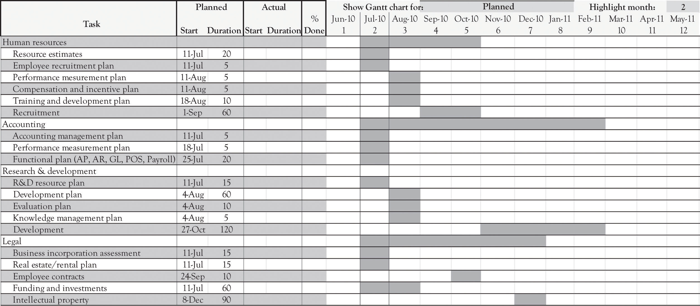

The Project Management Institute, an organization that sets industry standards in project and portfolio management, conducts research and provides education, certification, and professional exchange opportunities for project managers, defines a project as: “a temporary endeavor taken to create a unique product, service, or result.”Project Management Institute (2004). Temporary means the project has a definite beginning and end. This applies to the project, and not necessarily to the product, service, or result. All the systems that need to be built by the entrepreneur and his or her partners are basically projects.
Typically, projects progress in steps or incremental stages. The goal of a project is to reach a stated objective, and then terminate, passing results to ongoing operations. Initiation of projects is usually due to a market, customer, or organization demand, a technological advance, or a legal requirement. Figure 13.4 "Project Management" presents an overview of the project management process.IPS Associates (1997). It is sometimes referred to as a waterfall process because the process is typically sequential or linear.
Figure 13.4 Project Management

In many instances, project management can be carried out in a linear fashion. Linear projects follow the waterfall approach to project management. That is, the activities for completing the project are sequential and each separate activity follows in a more-or-less precise order. In general, the linear approach is amenable to very straightforward projects. Many of the activities related to setting up accounting systems, human resource systems, and many inventory management systems could be handled using the linear approach to project management.
There are instances where the project to be accomplished cannot be solved using a linear project management approach. Some projects are very complicated, with very loose specifications, and the final outcome in terms of success and features of the product are unpredictable. For example, new product development in the nanotechnology area where there are few products with similar features and the territory is largely uncharted needs a different approach to project management. Many of the emerging software applications involving social networking and game development also need a different approach. Agile project management is suitable in situations where learning-by-doing plays a more dominate role in product development. Discovery is the key as new territory is charted and the solution to the problem unfolds. Scrum development is one example of an iterative and agile approach to project management.Cf. Takeuchi and Nonaka (1986). The key difference from the traditional, waterfall process is that the agile process will be iterative and occur many times.
Regardless of the process, there are several tools that may be used to help manage a project and to communicate to the project team. There are of course sophisticated approaches and tools to managing the process as well as software tools for tracking projects. The simplest of tools includes a diary that can be used to track the amount of time that is spent on project activities. Section 13.8 "Exhibit 1: Project Management Individual Diary" is a sample Project Management Individual Diary for the initiation of a new business, as outlined earlier in the chapter. This diary outlines the tasks or activities needed to complete the project or subproject. Section 13.9 "Exhibit 2: Project Management Summary Diary" presents the Project Management Summary Diary, an aggregation of the individual project tasks used to manage projects.
Another useful tool is the work breakdown structure (WBS)Graphical, hierarchical chart based on the project deliverables, rather than the tasks needed to create those deliverables, and built from the top-down.. The WBS is always based on the project deliverables, rather than the tasks needed to create those deliverables, and is built from the top-down. It is constructed through decomposition. Deliverables are broken down into progressively smaller pieces. The result is a graphical, hierarchical chart, logically organized from top to bottom. Figure 13.5 "Work Breakdown Structure" represents a portion of a simple WBS.
A Gantt chartShows activities represented as horizontal bars and has a calendar along the horizontal axis. The length of the bar corresponds to the length of time the activity should require. is another very useful tool for understanding where a project has been, where it is going, what tasks need to be completed, and the tasks that have already been completed. Bar charts, or Gantt charts, show activities represented as horizontal bars and have a calendar along the horizontal axis. The length of the bar corresponds to the length of time the activity should require. A bar chart can be easily modified to show percentage complete (usually by shading all or part of the horizontal bar). It is considered to be a good tool to use to communicate with management because it is easy to understand at a glance. A typical Gantt chart for a project is illustrated in Figure 13.6 "Gantt Chart".
Figure 13.5 Work Breakdown Structure

Figure 13.6 Gantt Chart
